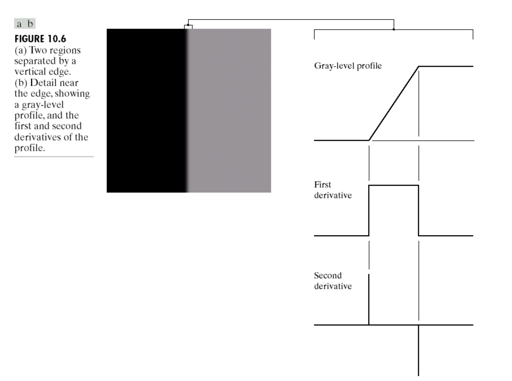
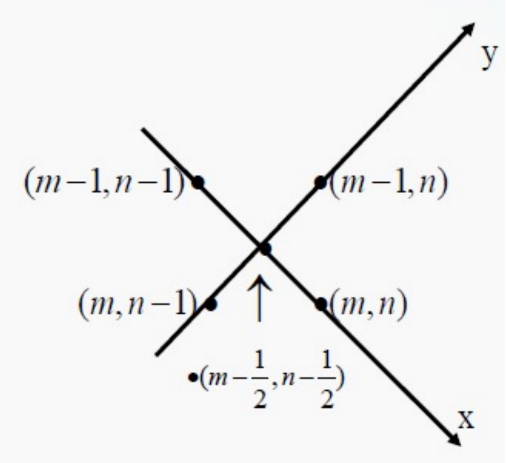
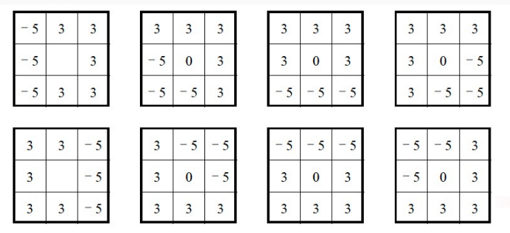
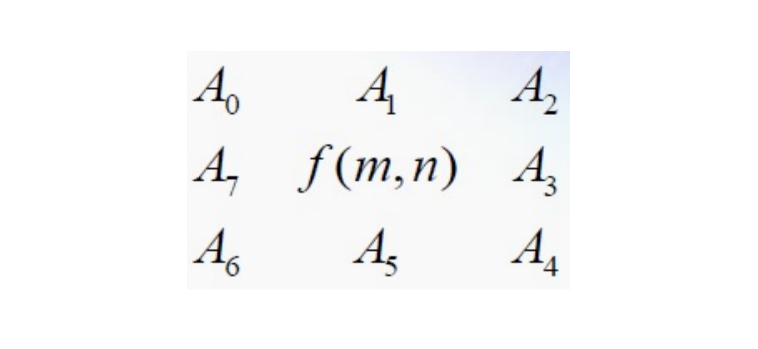
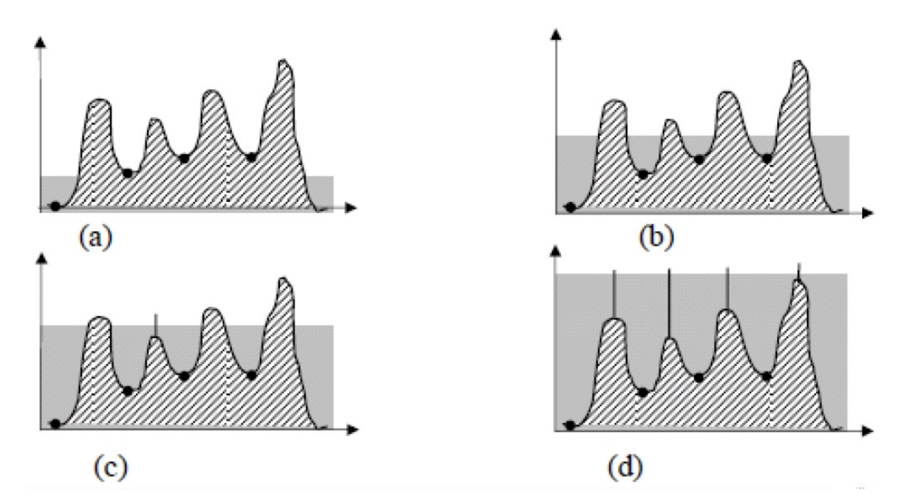
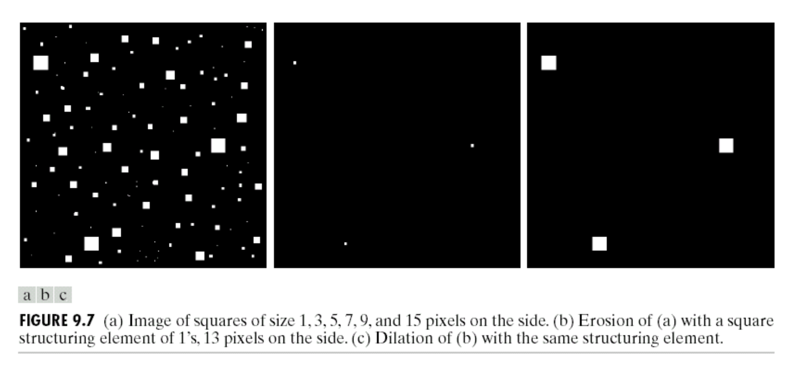
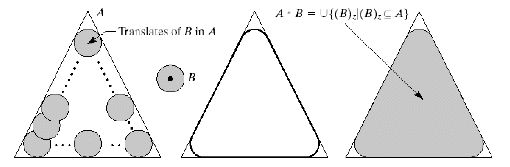
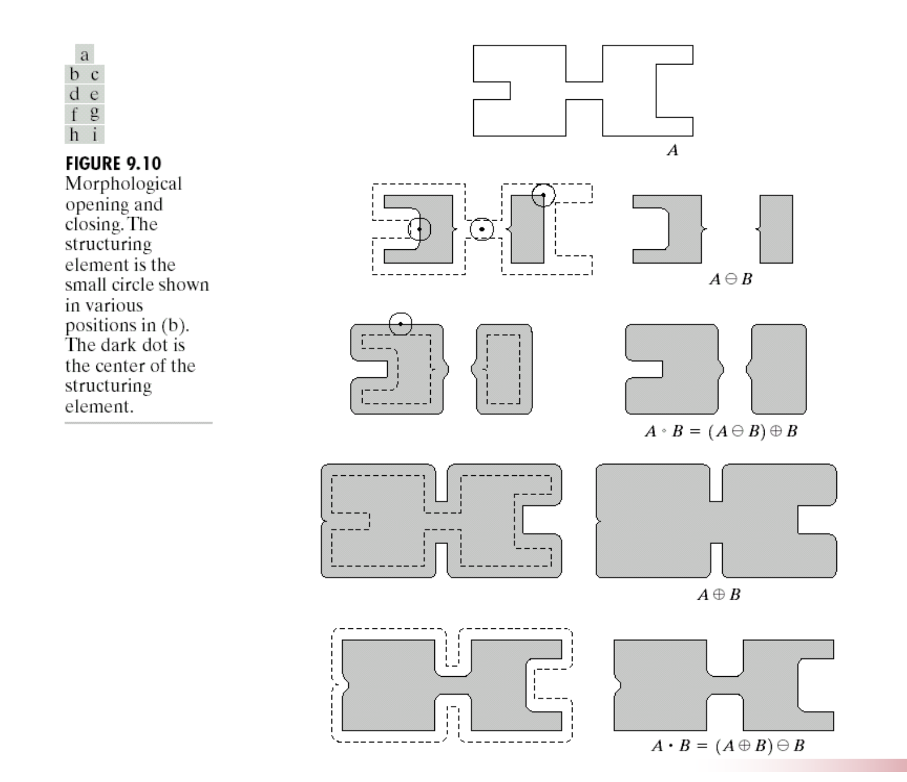
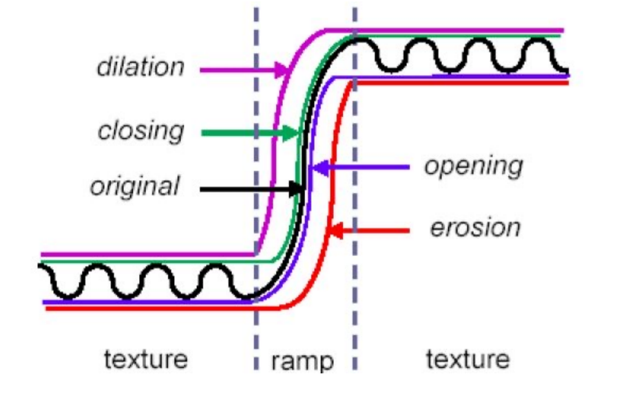
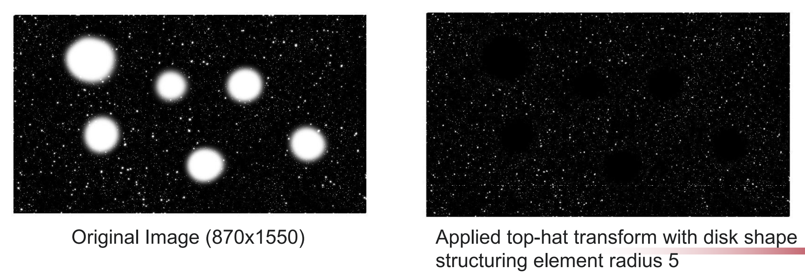

数字图像处理(7)：图像分割
Last updated on December 30, 2025 pm
这是SJTU-CS3324《数字图像处理》课程的知识点整理系列。本文整理部分为“第 7 章：图像分割”。
边缘检测 (Edge Detection)
1. 边缘检测的基本概念
- 定义与目的: 边缘检测是检测图像中有意义的不连续性最常用、最基本的方法
- 这些不连续性通常指示了图像中重要的结构信息
- 精确的边缘检测依赖于以一种有意义的方式来衡量灰度级的不连续性
- 边缘 (Edge) vs. 边界 (Boundary):
- 边界 (Boundary): 是一个全局 (global) 概念，它是一个有限区域的外围，形成一条闭合的路径
- 边缘 (Edge): 是一个局部 (local) 概念，它基于某一个点的灰度级不连续性的度量
- 关系: 一组从区域周围提取出的边缘，可以构成该区域的边界
- 边缘的物理成因: 图像中的边缘或不连续性通常由以下物理因素引起：
- 物体深度的变化（如物体与背景的交界）
- 物体表面方向的变化（如立方体的棱）
- 物体材质的变化
- 光照的变化（如阴影的边缘）
- Marr 的视觉模型: David Marr 的计算视觉模型中，初始简图 (Primal Sketch) 这一步就对应于从图像中提取边缘、斑点、条纹等基本几何结构
2. 边缘的数学模型与检测原理 (Models of Digital Edges)
- 边缘模型:
- 理想边缘 (Ideal Edge): 灰度值发生阶跃式突变
- 斜坡边缘 (Ramp Edge): 由于模糊等因素，实际图像中的边缘更像是灰度值在一定距离内平滑过渡的斜坡；斜坡的斜率反映了边缘的模糊程度
- 基于微分的检测原理: 边缘对应于灰度函数变化剧烈的地方，这在数学上可以通过导数来描述
- 一阶导数 (First Derivative):
- 在边缘的斜坡区域，一阶导数的值为非零常数，其幅值 (Magnitude) 可以用来检测边缘的存在
- 一阶导数的峰值或平台区域的中心，对应于边缘的中心
- 二阶导数 (Second Derivative):
- 在边缘的斜坡区域，二阶导数会产生一对正负脉冲，并在边缘中心点处穿过零点（零交叉, zero-crossing）
- 零交叉的属性可以用来精确定位边缘的中心位置
- 二阶导数的符号可以用来判断边缘像素是位于边缘的暗侧还是亮侧
- 一阶导数 (First Derivative):

- 图像中的导数算子:
- 一阶导数通过梯度 (Gradient) 算子来计算
- 二阶导数通过拉普拉斯 (Laplacian) 算子来计算
A. 基于微分算子的边缘检测 (Edge Detection Based on Differential Operators)
这部分内容是边缘检测最经典和基础的方法，其核心是利用一阶和二阶微分来定位图像灰度值的不连续性。
1. 梯度算子 (Gradient Operators) - 基于一阶导数
-
连续域下的定义:
- 梯度向量: 图像 在位置 的梯度 是一个向量，包含了图像在该点沿 x 和 y 方向的偏导数
- 梯度向量的性质与计算:
- 方向: 梯度向量指向图像灰度值变化率最大的方向
- 幅值: 梯度向量的幅值 给出了这个最大变化率的大小
- 与边缘的关系: 梯度向量的方向垂直于边缘的方向
- 梯度向量: 图像 在位置 的梯度 是一个向量，包含了图像在该点沿 x 和 y 方向的偏导数
-
离散域下的实现: 在数字图像中，偏导数被差分近似所取代
- 基本梯度近似:
- x 方向梯度: (当前像素 左侧像素)
- y 方向梯度: (当前像素 上方像素)
- 对应的掩模 (Mask)：
- 离散梯度幅值:
- 在实际计算中，为了简化，也常用绝对值之和来近似
- 离散梯度方向:
- 基本梯度近似:
2. Roberts 交叉梯度算子 (Roberts cross-gradient operators)
- 思想: 这是一种使用对角线方向的像素差分来计算梯度的早期方法
- 公式:
- 掩模:
- 边缘检测: 计算梯度幅值 ，如果幅值大于某个阈值 ，则判断该点为边缘点

3. 拉普拉斯算子 (The Laplacian) - 基于二阶导数
- 用途: 拉普拉斯算子既可以用于边缘增强，也可以用于边缘检测
- 用于边缘增强 (Edge Enhancement):
- 思想: 通过从原图中减去其拉普拉斯变换的结果，可以突出图像中的高频细节，即锐化图像
- 公式:
- 掩模: 这对应于我们之前在图像增强章节中讨论过的锐化掩模
- 用于边缘检测 (Edge Detection):
- 思想: 寻找拉普拉斯变换结果的零交叉点 (zero-crossing) 来定位边缘
- 公式 (连续域):
- 离散实现与掩模: 两种从 3x3 邻域 （ 为中心）推导出的离散拉普拉斯掩模
- 基于4-邻域:
对应的掩模为:
- 基于8-邻域:
对应的掩模为:
- 基于4-邻域:
- 直接使用拉普拉斯进行边缘检测的缺陷:
- 对噪声非常敏感: 二阶导数会放大噪声
- 定位不精确 (双边响应): 在边缘两侧产生正负响应，而不是单一的边缘线
- 无法检测边缘方向
- 拉普拉斯在分割中的作用:
- 利用其零交叉属性来精确定位边缘
- 通过响应的符号来判断像素点位于边缘的暗侧还是亮侧
- 二阶导数方法的改进: LoG & DoG（详细见后续）
B. 基于曲面拟合的边缘检测 (Edge Detection Based on Surface Fitting)
这部分介绍了一系列比简单差分更稳健和常用的梯度算子。它们的核心思想是，不再仅仅考虑两个像素的差值，而是通过一个数学模型去拟合一个像素邻域的灰度曲面，然后通过求解该模型的参数来计算梯度。
1. 基本思想与推导 (Basic ideas, Derivative operator)
- 思想:
- 曲面拟合: 假设一个像素邻域（如 2x2 或 3x3）内的离散灰度值可以用一个简单的连续曲面来近似
- 求导: 通过对这个拟合出的曲面求偏导数，来估计中心点的梯度
- 基于平面拟合的推导 (2x2 邻域):
- 模型: 在一个 2x2 的邻域 中，使用一个平面 来拟合四个像素点的灰度值
- 目标: 找到 使得拟合误差的平方和 最小
- 求解: 通过对 分别求 的偏导并令其为零，可以解出梯度分量 和
- (右侧两点均值 左侧两点均值)
- (下方两点均值 上方两点均值)
- 掩模: 这个推导结果对应于以下 2x2 的梯度掩模 和
2. Prewitt 算子 (Prewitt Operators)
- 思想: 将曲面拟合的思想扩展到 3x3 邻域
- 使用二次曲面 进行拟合
- 它通过在计算中心行/列的差分之前，对相邻行/列进行平均，从而引入了平滑特性，增强了对噪声的抑制能力
- 掩模: Prewitt 算子使用以下 3x3 掩模来计算 和 方向的梯度
3. Sobel 算子 (Sobel Operators)
- 思想: Sobel 算子是 Prewitt 算子的加权版本
- 它同样在 3x3 邻域内工作，但在进行平均时，给予了中心行/列的邻域像素更高的权重（权重为 2）
- 这样做可以更好地抑制噪声，并使得边缘检测结果更平滑
- 掩模: Sobel 算子的掩模为
4. Kirsch 算子 (Kirsch Operators)
- 思想: 这是一种通过一组预定义的掩模来检测不同方向边缘的算子，它旨在找出每个像素点处梯度响应最强的方向
- 方法:
- 定义了两类和 和 ，分别代表了以中心像素为顶点、环绕它的 8 个邻域像素中，连续 3 个像素的和（）与剩下 5 个像素的和（）
- 对于 8 个不同的方向（），计算 ，这个值衡量了该方向上的梯度强度
- 最终在点 处的输出 是所有8个方向响应中的最大值（并与一个常数 比较）
- 掩模: 掩模就是计算 的直接实现

5. Wallis 算子 (Wallis Operators)
- 思想与功能: Wallis 算子的设计目标是检测暗区域中的边缘 (Detect edges in dark areas)
- 常规的梯度算子在暗区（灰度值低且相近）响应较弱，而 Wallis 算子通过对数变换来解决这个问题
- 方法: 该算子计算的是中心像素 的对数值与其4个主要方向邻域像素 () 对数值的均值之差的绝对值
对数函数在输入值较小时，其斜率较大，因此能够放大低灰度值区域的微小差异，从而增强了在暗区的边缘检测能力

6. 高斯拉普拉斯 (Laplacian of Gaussian - LoG)
- 思想: 这是对二阶导数方法（拉普拉斯算子）的改进，旨在解决其对噪声高度敏感的问题，该方法遵循“先平滑，后检测”的策略
- 高斯平滑: 首先对图像进行高斯滤波以抑制噪声
- 拉普拉斯检测: 然后对平滑后的图像应用拉普拉斯算子
- 这两个步骤可以合并为一步，即用一个 LoG 核与图像进行卷积
- 算子特性:
- 3D 形状: LoG 算子的三维形状像一顶墨西哥草帽，中心是正的峰值，周围是一圈负值的沟壑
- 零交叉: 边缘被定位在 LoG 响应结果的零交叉点 (zero-crossing)，即从正值变为负值的位置
- 掩模: 5x5 的离散掩模，用于近似 LoG 算子的形状
7. 高斯差分 (Difference of Gaussians - DoG)
- 思想: DoG 是 LoG 算子的一种计算上更高效的近似
- 它基于以下观察：两个具有不同标准差 () 的高斯函数的差值，其形状与 LoG 算子非常相似
- 方法:
- 使用两个不同尺度（标准差 和 ）的高斯核分别对图像进行平滑
- 将两幅平滑后的图像相减，得到 DoG 响应
- 当 时，DoG 能很好地近似 LoG
- 优势: 高斯模糊是可分离的，存在非常快速的实现算法
- 计算两次高斯模糊并相减，通常比直接进行 LoG 卷积要快得多
- 因此，DoG 在需要快速特征检测的场合（如 SIFT 算法）中被广泛采用
Mini Chapter: Canny 边缘检测器 (Canny Edge Detector)
介绍 (Introduction)
- 地位: Canny 边缘检测是使用最广泛的边缘检测方法之一，被认为是一种效果非常好、实现完善的算法
- 本质: 它是一个多阶段 (multi-stage) 的解决方案，综合了多种技术来达到理想的边缘检测效果
- 发明人: 由 John F. Canny 于 1986 年在其著名的论文 A computational approach to edge detection 中提出
Canny 边缘检测器的设计准则 (Criteria for good edge detector)
Canny 算法的设计旨在优化三个关键性能指标：
- 准确性 (Accuracy): 能够最大可能地检测到真实的边缘（高检测率），同时最小化将非边缘点误判为边缘的概率（低虚警率）
- 鲁棒性 (Robustness): 算法对噪声不敏感，能够在有噪声的情况下依然稳定地工作
- 精确定位: 检测到的边缘点应尽可能地接近真实边缘的中心
- 并且对于单个真实边缘，只应产生单一的像素响应（无双边响应或多重响应）
Canny 边缘检测的步骤 (Steps)
Canny 算法通过一个包含五个核心步骤的流程来实现上述目标。
高斯滤波 (Gaussian filtering)
- 目的: 抑制图像噪声
- 由于边缘检测依赖于微分运算，而微分会放大噪声，因此去噪是至关重要的第一步
- 方法: 使用一个高斯滤波器（默认使用 5x5 的窗口）对原始图像进行卷积，以平滑图像
梯度计算 (Gradient computation)
- 目的: 计算图像中每个像素点的梯度强度和方向
- 方法: 对平滑后的图像使用梯度算子（如 Sobel 算子）来计算 和 方向的偏导数，然后得到梯度幅值和方向
- 方向近似: 为了便于后续处理，将计算出的梯度方向粗略地归纳到 4 个主要方向之一：0° (水平), 45° (对角), 90° (垂直), 135° (反对角)
非极大值抑制 (Low thresholding)
- 目的: 将梯度图中由边缘引起的“宽脊”细化为单像素宽度的线，即边缘细化 (Edge thinning)
- 方法: 遍历梯度图中的每一个像素
- 查看该像素的梯度方向（4 个方向之一）
- 比较该像素的梯度幅值与其梯度方向前后两个邻居的梯度幅值
- 只有当该像素的梯度幅值大于其前后两个邻居时，才保留该像素；否则，抑制该像素（将其值置零）
- 结果: 这一步之后，只有局部最大值的点被保留下来，形成了一系列单像素宽的候选边缘链
双阈值检测 (Double thresholding)
- 目的: 利用梯度幅值的大小，将候选边缘像素分为三类，以区分强边缘和弱边缘
- 方法:
- 设置两个阈值：一个高阈值 (Threshold 2) 和一个低阈值 (Threshold 1)
- 分类:
- 梯度幅值 > Threshold 2 的像素被标记为强边缘 (strong edge)
- Threshold 1 < 梯度幅值 < Threshold 2 的像素被标记为弱边缘 (weak edge)
- 梯度幅值 < Threshold 1 的像素被认为是非边缘 (trivial edge)，并被直接消除
边缘连接 (Edge tracking by hysterisis)
- 目的: 连接边缘断裂，并消除由噪声引起的孤立弱边缘
- 滞后性 (Hysteresis): 这个词描述了一种依赖于历史状态的系统行为
- 在这里，一个弱边缘点是否被最终确认为真实边缘，取决于它是否与一个已知的真实边缘（强边缘）相连
- 方法:
- 将所有强边缘像素直接作为最终边缘的一部分
- 遍历所有弱边缘像素，检查 8 邻域内是否存在一个强边缘像素（或一个已经被确认为边缘的弱边缘像素）
- 如果一个弱边缘像素能够连接到一个强边缘，则它也被保留为真实边缘
- 重复这个过程，直到所有与强边缘相连的弱边缘链都被保留下来
- 孤立的、不与任何强边缘相连的弱边缘则被消除
缺点与改进 (Drawbacks and improvements)
- 高斯滤波可能过度平滑细节:
- 改进: 使用更先进的去噪方法（如双边滤波）
- 梯度计算对噪声敏感:
- 改进: 使用更鲁棒的梯度算子，如 Sobel
- 固定的阈值:
- 改进: 使用自适应阈值 (Adaptive ones) 方法，根据图像的局部特性动态调整阈值
- 单一边缘响应不被完全保证:
- 改进: 结合形态学方法 (Morphology method) 进行后处理，如细化操作
直线检测 (Line Detection)
霍夫变换 (Hough Transform)
霍夫变换是一种在图像中识别几何形状（如直线、圆形等）的特征提取技术。它通过一种巧妙的投票机制，将图像空间中的形状检测问题，转化为参数空间中的峰值检测问题。
历史与背景
- 发明人: 由 Paul Hough 于 1959 年首次提出，他最初的目的是用于分析气泡室照片中的粒子轨迹
- 推广: 今天我们普遍使用的广义霍夫变换，是由 Richard Duda 和 Peter Hart 在 1972 年提出的
基本思想：点-线对偶性
- 问题: 如何从一堆离散的边缘点中找出潜在的直线
- 核心思想: 利用点与线之间的对偶关系
- 图像空间 (Image Space, x-y平面):
- 一条直线由方程 决定，其中 是斜率， 是截距
- 一个点 上可以穿过无数条直线
- 参数空间 (Parameter Space, u-v平面):
- 将直线方程 变形为
- 在这个 - 参数空间中，这个方程代表的是一条直线
- 对偶性: 图像空间中的一个点 ，对应于参数空间中的一条直线
- 图像空间 (Image Space, x-y平面):
- 检测流程:
- 图像空间中的一条直线上有很多共线点
- 根据对偶性，每一个共线点 都对应于参数空间中的一条直线
- 由于这些点 都满足同一个直线方程 ，它们在参数空间中对应的所有直线 ，必然会相交于同一点
- 因此，图像空间中的共线点检测问题，就转化为了参数空间中的直线交点检测问题
实际算法：投票与累加器
- 问题:
- 检测已知方向的直线: 这是最初的简单情况，如果已知直线的方向（斜率 ），只需检查哪些点满足 即可
- 检测未知方向和位置的直线: 这是更普遍和有用的情况
- 累加器数组 (Accumulator Array): 为了在参数空间中寻找交点，我们使用一个二维数组，称为累加器
- 离散化: 首先将参数空间 u-v 离散化为一个网格，累加器数组的每一个单元 对应于参数空间中的一个小区域
- 投票:
- 遍历图像空间中所有的边缘点
- 对于每一个边缘点，在参数空间中画出其对应的直线
- 这条直线穿过了累加器数组中的哪些单元，就给这些单元的计数值加一
- 寻找峰值:
- 当所有边缘点都“投票”完毕后，累加器数组中某些单元的计数值会很高，形成峰值
- 这些峰值所在的位置 ，就对应于图像空间中最可能存在的直线的参数
- 峰值越高，说明支持这条直线的共线点越多
垂直线问题与极坐标解决方案
- 问题 (The vertical line dilemma): 原始的 表示法有一个致命缺陷
- 当直线为垂直线时，其斜率 变为无穷大 (unbounded slope)，无法在有限的 - 参数空间中表示
- 解决方案 (Solution): 使用极坐标参数来表示直线，即 平面
- 方程:
- : 坐标原点到直线的垂直距离
- : 这条垂直线的角度
- 优点: 这种表示法可以表示图像平面上的任意直线，参数 和 的范围都是有限的
- 新的对偶性: 在 - 图像空间中的一个点，对应于 - 参数空间中的一条正弦曲线
- 与 Radon 变换的关系: 霍夫变换在数学上等价于 Radon 变换（用于 CT 重建）
- 方程:
霍夫变换的推广与步骤总结
-
推广: 霍夫变换的思想可以推广到检测任何可以用参数方程表示的形状，如圆形
- 检测已知半径的圆: 圆的方程为
- 如果半径 已知，则参数只有圆心
- 对偶性: - 图像空间中的一个边缘点 ，对应于 - 参数空间中的一个圆
- 检测: 图像空间中共圆的点，在参数空间中对应的所有圆会相交于一点，即为待求的圆心
- 检测已知半径的圆: 圆的方程为
-
霍夫变换的四个标准步骤:
- 确定参数空间: 根据要检测的形状，选择合适的参数表示法，如直线的 、圆的
- 创建并初始化累加器数组: 将参数空间离散化，并创建一个所有元素为零的累加器
- 扫描与投票: 遍历二值边缘图像中的每一个值为 1 的点
- 对于每个点，计算出它在参数空间中对应的曲线/曲面，并将该曲线/曲面穿过的所有累加器单元的值加一
- 寻找最大值: 在累加器数组中寻找计数值的峰值，峰值的位置就对应于检测到的几何形状的参数
基于区域的分割 (Region-Based Segmentation)
- 定义: 图像分割 (Image segmentation) 的任务是将一幅图像细分 (subdivides) 成其构成的区域 (regions) 或物体 (objects)
- 分割的层次与影响:
- 分割层次 (Segmentation level) 取决于具体问题，可以是像素级的，也可以是区域级的
- 分割精度 (Segmentation accuracy) 会直接影响后续分析步骤（如特征提取、目标识别）的性能
- 两大基本原则: 图像分割算法通常基于像素值的两个基本属性之一
- 不连续性 (Discontinuity):
- 方法: 基于灰度值的突变 (abrupt changes) 来寻找区域之间的边界
- 对应技术: 边缘检测就是这类方法的代表
- 相似性 (Similarity):
- 方法: 根据预定义的准则，将相似的像素或区域组合在一起，形成一个完整的区域
- 对应技术: 阈值处理 (Thresholding)、区域生长 (Region Growing)、区域分裂与合并 (Region Splitting and Merging)、分水岭分割 (Watersheds) 都属于这类方法
- 不连续性 (Discontinuity):
- 本部分的目标: 根据一组预定义的准则，将一幅图像分割成若干相似的区域
A. 阈值处理 (Thresholding)
阈值处理是最简单的分割方法。
- 思想: 当图像中目标物体和背景的灰度值存在明显差异时，它们的直方图会呈现出双峰或多峰的形态
- 我们可以通过在这些波谷处设置一个或多个阈值 (Threshold) ，来将像素进行分类
- 方法:
- 单阈值:
- if (前景/物体)
- if (背景)
- 或反之
- 多阈值: 可以设置多个阈值 , … 来分割具有多个不同灰度级物体的图像
- 单阈值:
- 多特征阈值处理 (Multi-feature): 阈值处理不仅可以基于灰度这单一特征，也可以基于多个特征（如颜色、纹理等）
- 当多个特征之间存在相关性时，简单的单特征直方图可能无法有效分离类别，而多维特征空间中的聚类分析可以实现更好的分割
B. 区域生长 (Region Growing)
- 定义: 这是一种将像素或子区域组合成更大区域的程序，其组合的依据是预定义的相似性准则 (predefined criteria)
- 基本方法:
- 选择种子点 (seed points): 首先在图像中选择一个或多个种子点作为生长起点，种子点的选择可以基于问题的先验知识
- 生长: 从每个种子点开始，将其邻域内满足相似性准则的像素追加 (appending) 到该种子点所在的区域中
- 迭代: 将新加入的像素作为新的生长点，不断重复步骤 2，直到没有更多满足条件的像素可以被添加到该区域为止
- 关键要素:
- 种子点的选择: 对最终分割结果影响很大
- 相似性准则的选择: 取决于具体问题和图像数据的类型
- 常用的准则包括：灰度值差异、颜色差异、纹理相似性等
- 例如，，表示如果一个邻域像素的灰度值与当前区域的平均灰度值 的差小于 2，则将其合并
区域分裂与合并 (Region Splitting and Merging)
这是一种与区域生长思路相反或结合的方法。
- 思想 (Alternative): 与从单个点开始“生长”不同，这种方法从整张图像开始，通过分裂和合并操作来逐步优化分割结果
- 流程 (Procedures):
- 定义同质性准则 (Define the criterion for homogeneity)
- 分裂 (Split): 将一个区域（初始为整张图像）分裂成若干个子区域
- 如使用四叉树 (Quadtree) 结构，将一个区域分裂成四个等大的子区域
- 检验同质性 (Calculate homogeneity): 对每个新分裂出的子区域，根据准则判断其是否“同质”
- 合并/继续分裂 (Merge/Split):
- 如果一个区域不是同质的，则继续对其进行分裂
- 如果一个区域是同质的，则尝试将其与相邻的、并且合并后依然满足同质性准则的区域进行合并
- 终止: 重复以上过程，直到没有区域可以再进行分裂或合并为止
- 同质性准则 (Homogeneity): 用于判断一个区域内部是否“一致”的准则，例如：
- 一致性 (Uniformity): 如果区域内所有像素的灰度级是恒定的，或在一个给定的阈值范围内，则该区域是同质的
- 例如，
- 方差 (Variance): 如果区域内像素灰度值的方差小于一个指定的阈值，则该区域是同质的
- 一致性 (Uniformity): 如果区域内所有像素的灰度级是恒定的，或在一个给定的阈值范围内，则该区域是同质的
C. 分水岭分割 (Segmentation by Watersheds)
- 思想: 这是一种源于地形学 (topography) 的强大分割方法，它将灰度图像看作一个三维的地形图，其中像素的灰度值对应于地形的高度
- 汇水盆地 (Catchment Basins): 对应于图像中的暗区（局部最小值）
- 分水岭线 (Watershed Lines): 对应于图像中区域之间的边界（地形的高脊）
- 目标: 找到这些分水岭线
- 基本思路 (Basic ideas): 通过一个模拟“淹没” 的过程来找到分水岭
- 打孔: 想象在每个局部最小值（汇水盆地的最低点）的位置打一个孔
- 淹没: 从这些孔中以均匀的速率向上注水，整个地形开始被淹没
- 筑坝: 当来自不同汇水盆地的水即将汇合 (merge) 时，在它们之间修建一座大坝 (dam) 以阻止汇合
- 形成分水岭: 持续这个过程，直到整个地形都被淹没
- 最终，这些大坝的顶部就构成了分水岭线，它们就是分割出的区域边界

形态学滤波 (Morphological Filtering)
简介与历史
- 定义: 数学形态学 (Mathematical morphology) 是一种工具，用于提取图像中在区域形状的表示和描述中有用的组分，例如边界 (boundaries)、骨架 (skeletons) 和凸包 (convex hull)
- 应用:
- 形态学图像处理可以在图像分割之后使用，以获得更好的分割结果（例如，去除噪声、连接断裂、分离物体）
- 例如，通过帧差法初步检测出运动物体后，存在大量噪声，后续可以通过形态学处理来得到干净的物体轮廓
- 理论基础: 数学形态学的语言是集合论 (set theory)
- 在形态学中，集合代表了图像中的物体
- 对于二值图像，这些集合是二维整数空间的成员
- 历史: 数学形态学是在 1964 年由 Georges Matheron 和 Jean Serra 在法国巴黎高等矿业学院合作开发的
基本概念
- 基本元素:
- 集合 (Set) : 代表了图像中的物体（前景像素）
- 结构元素 (Structuring Element) : 这是一个小的、预定义形状的集合（类似于滤波中的“核”），用于“探查”图像。
- 三个基本关系: 结构元素 和集合 之间的三种基本关系
- : 被 完全包含
- : 与 相交（B hits X）
- : 完全位于 的外部（补集）
基本操作: 膨胀与腐蚀
形态学处理的核心是两个基本操作：膨胀 (Dilation) 和 腐蚀 (Erosion)。
- 膨胀 (Dilation):
- 定义: 集合 被结构元素 膨胀的结果，是所有位移 的集合：在这些位移 处，将 关于其原点对称后的 平移 后，与集合 的交集不为空
- 公式:
- 理解: 膨胀可以看作是用结构元素 的中心，扫描整幅图像
- 只要 的任何部分接触到了物体 ，就将 B 的中心点位置标记为前景，最终结果是所有标记点的集合
- 效果:
- 使物体“变胖”或“增长”
- 填充物体内部的孔洞
- 连接断裂的相邻物体

- 腐蚀 (Erosion):
- 定义: 集合 被结构元素 腐蚀的结果，是所有位移 的集合：在这些位移 处，将 平移 后， 仍然完全被包含在集合 内部
- 公式:
- 理解: 腐蚀可以看作是用结构元素 在物体 的内部滚动
- 只有当 完全处于 的内部时， 的中心点位置才会被标记为前景
- 效果:
- 使物体“变瘦”或“收缩”
- 消除小的、孤立的噪声点
- 分离粘连的物体


复合操作: 开运算与闭运算
通过组合膨胀和腐蚀，可以得到两个非常重要的复合操作：开运算 (Opening) 和 闭运算 (Closing)。
- 开运算 (Opening):
- 定义: 对集合 先用结构元素 进行腐蚀，然后用同一个 对结果进行膨胀
- 公式:
- 几何解释: 开运算的几何意义可以想象成用结构元素 在物体 的内边界“滚动”，B 能“滚到”的所有区域的并集，就是开运算的结果
- 功能:
- 平滑物体的轮廓 (smoothens the contour)
- 断开狭窄的连接 (breaks narrow linkages)
- 消除细小的突出物和孤立的区域 (eliminates small regions)
- 总体效果: 消除比结构元素小的“亮”细节，同时保持大物体尺寸基本不变


- 闭运算 (Closing):
- 定义: 对集合 先用结构元素 进行膨胀，然后用同一个 对结果进行腐蚀
- 公式:
- 几何解释: 闭运算的几何意义是让结构元素 在物体 的外边界“滚动”
- 功能:
- 同样能平滑轮廓
- 弥合狭窄的裂缝 (fuses narrow breaks)
- 填充轮廓中的小缺口 (fills in gaps in the contour)
- 消除物体内部的小孔洞 (eliminates small holes)
- 总体效果: 填充比结构元素小的“暗”细节（孔洞、裂缝），同时保持大物体尺寸基本不变

- 开闭运算的联合应用: 连续地进行开运算和闭运算（或者反之），可以有效地去除图像中的微小物体和填充物体内部的小孔洞
- 先进行开运算，可以消除所有小于结构元素的孤立亮噪声点（objects）
- 再对开运算的结果进行闭运算，可以填充掉所有小于结构元素的暗噪声点（holes）

其他形态学应用
- 灰度图像中的形态学:
- 思想: 将二值形态学的概念扩展到灰度图像，将灰度图像看作一个三维的地形景观 (landscape)，像素的灰度值代表了地形的高度
- 灰度膨胀与腐蚀:
- 灰度膨胀 (Dilation): 在结构元素覆盖的邻域内，将中心像素的值替换为该邻域内的最大值 (maximum)
- 效果是使图像中的亮区域扩张，暗区域收缩
- 灰度腐蚀 (Erosion): 在结构元素覆盖的邻域内，将中心像素的值替换为该邻域内的最小值 (minimum)
- 效果是使图像中的暗区域扩张，亮区域收缩
- 灰度膨胀 (Dilation): 在结构元素覆盖的邻域内，将中心像素的值替换为该邻域内的最大值 (maximum)
- 灰度开运算与闭运算: 定义与二值情况类似（先腐蚀后膨胀为开，先膨胀后腐蚀为闭）
- 灰度开运算: 倾向于平滑“山峰”，抑制比结构元素小的亮细节
- 灰度闭运算: 倾向于填充“山谷”，抑制比结构元素小的暗细节

-
形态学梯度 (Morphological Gradient):
- 思想: 利用膨胀和腐蚀操作对物体边界的影响来提取轮廓
- 膨胀会使物体边界向外扩张，腐蚀会使物体边界向内收缩
- 这两者之间的差异就位于物体的轮廓上
- 三种梯度的定义:
- 标准梯度:
- 公式:
- 计算: 用集合 的膨胀结果减去其腐蚀结果
- 效果: 得到一个环绕物体真实边缘的、有一定厚度的轮廓
- 内梯度:
- 公式:
- 计算: 用原始集合 减去其腐蚀结果
- 效果: 得到位于物体内部、紧贴真实边缘的轮廓
- 外梯度:
- 公式:
- 计算: 用集合 的膨胀结果减去原始集合
- 效果: 得到位于物体外部、紧贴真实边缘的轮廓
- 标准梯度:
- 性质:
- 内梯度和外梯度通常比标准梯度更“细”
- 标准梯度的峰值位于边缘之上，而内梯度和外梯度的峰值则分别位于边缘的两侧
- 思想: 利用膨胀和腐蚀操作对物体边界的影响来提取轮廓
-
顶帽变换 (Top-hat Transform):
- 思想: 利用开运算和闭运算来分离出图像中相对于背景更亮或更暗的、且尺寸较小的物体
- 白顶帽变换 (White Top-hat):
- 公式:
- 计算: 用原始图像 减去其开运算结果
- 原理: 开运算会消除所有小于结构元素 B 的“亮”细节
- 因此，用原图减去开运算的结果，剩下的就正是这些被消除掉的亮细节
- 功能: 提取图像中相对于周围环境更亮 (brighter) 且尺寸小于结构元素的物体或细节
- 黑顶帽变换 (Black Top-hat):
- 公式:
- 计算: 用图像的闭运算结果减去原始图像
- 原理: 闭运算会填充所有小于结构元素 的“暗”细节（如孔洞、裂缝）
- 因此，用闭运算结果减去原图，剩下的就正是这些被填充上的暗细节
- 功能: 提取图像中相对于周围环境更暗 (darker) 且尺寸小于结构元素的物体或细节

参考资料
本文参考上海交通大学电子工程系《数字图像处理》课程 CS3324 闵雄阔老师的 PPT 课件整理。